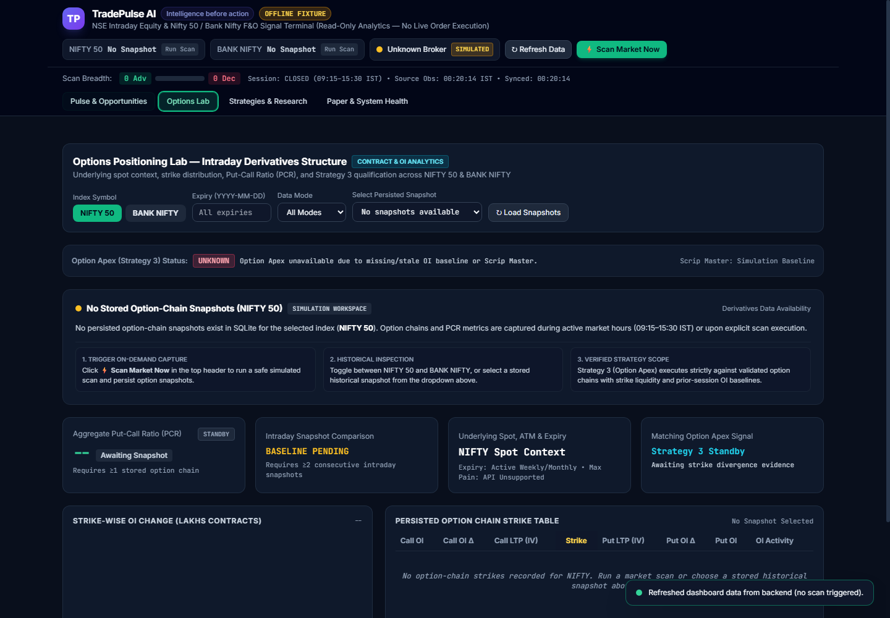
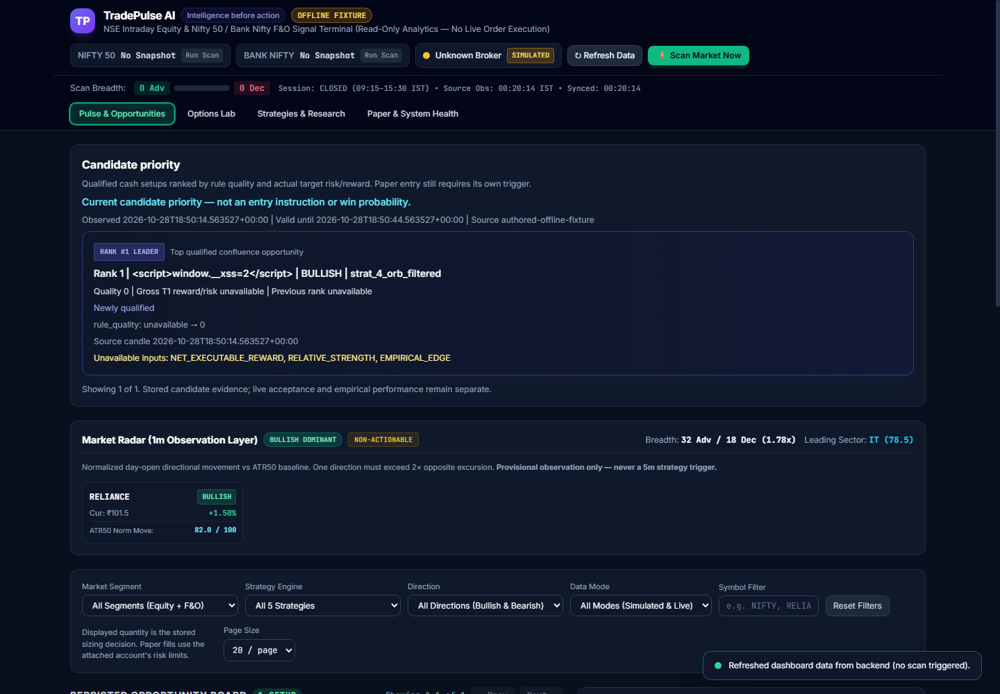
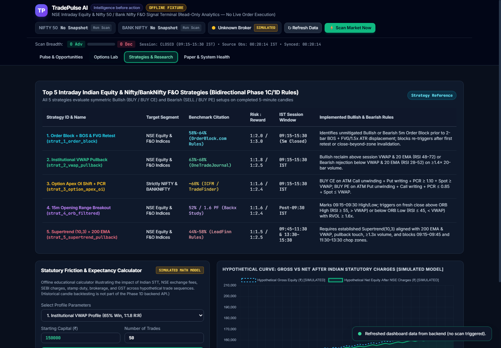
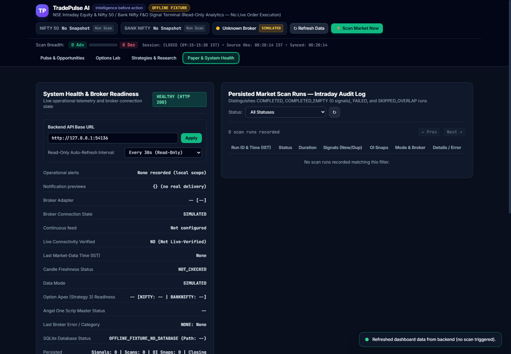
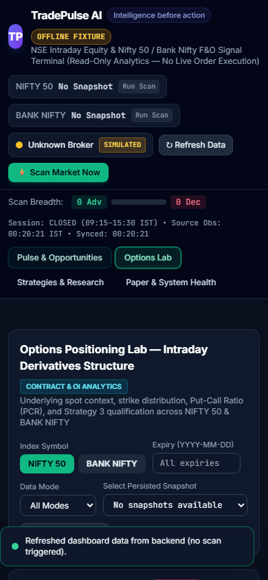
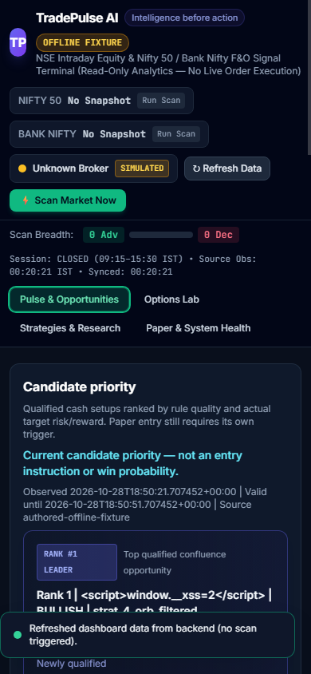

Official offline local verification gallery for the Track B UI transformation. All visual anti-patterns flagged by the owner have been resolved with editorial financial terminal styling, clean information architecture, zero raw API strings, and comprehensive empty-state data availability panels.






| Test Suite | Command | Pass / Total | Exit Code |
|---|---|---|---|
| Node.js DOM Regression Suite | node test_cash_dashboard.js | 40 / 40 Passed | 0 |
| Wave 1 Radar & Transitions Tests | python test_astra_wave1_radar_and_transitions.py | 8 / 8 Passed | 0 |
| Wave 2 DOM Contracts & API Tests | python test_astra_wave2_server_and_ui.py | 10 / 10 Passed | 0 |
| Headless Chrome Multi-Viewport CDP Probes | python docs/evidence/astra_browser_assets_verify_20261027_01.py --stage trackb_premium_20261029_01 | 138 / 138 Passed | 0 |